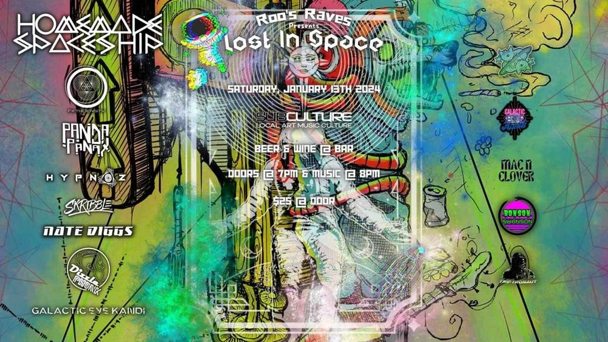

SAT JAN 13from the archive
Homemade Spaceship, Panda Panax, Fifth Density, Hypnoz, Skribble, Nate Diggs, Dizzle Phunk, Galactic Eye Kandi
doors 7pm, music 8pm
$25
2024 is the year we at Subculture begin accelerating our FTL drives to take us to worlds beyond our imagination. First up on our mission to strange new worlds, we are getting Lost In Space with @echoroomcneill / Echo RaNell McNeill as our distress signal is answered by none other than @homemadespaceship / Homemade Spaceship With our fearless crew of stalwart space adventurers; including Fifth Density, Panda Panax, Hypnoz, Skribble, Nate Diggs, Dizzle Phunk, and Galactic Eye Kandi, join us as we attempt to navigate the depths of our imaginations. Limited Presale tickets are available here: https://www.pensacolasubculture.com/lost-in-space
also that nightlost in space @ subculture